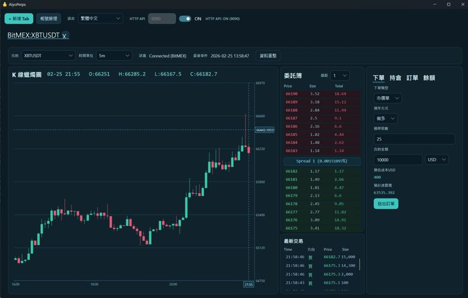
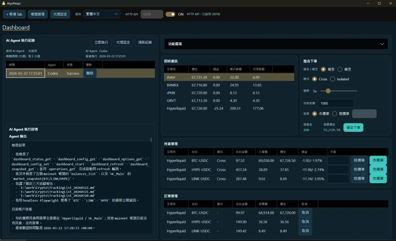
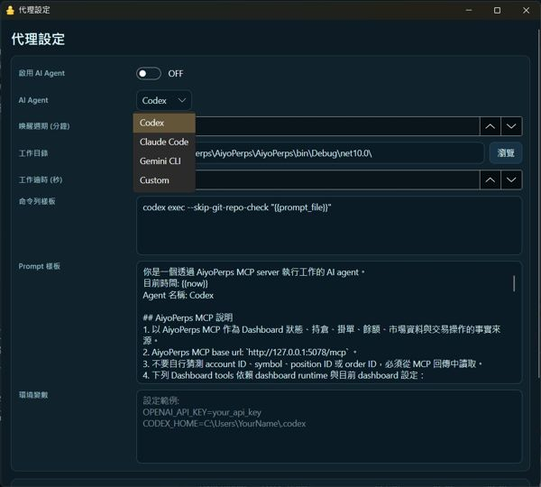

完整桌面工作區
整合 K 線、委託簿、下單面板、持倉與訂單視圖，保有手動交易的速度與掌控感。
整合 K 線、委託簿、下單面板、持倉與訂單視圖，保有手動交易的速度與掌控感。
對接 Codex、Claude、Gemini 等 AI Agent，讓代理程式讀行情、查帳戶與協助決策。
固定時間喚醒 AI Agent 的能力，適合做風險巡檢與半自動作業。
價位到達、獲利到達等條件主動喚醒 AI Agent，完美實現 AI 風控、交易倫理。
除了 MCP，也能讓內部工具、腳本與自建服務呼叫本機 HTTP API。
只需要 API 或 MCP 時，可用 headless 模式啟動，讓桌面程式成為可部署的本機交易服務核心。
官方文件列出的支援平台包含 BitMEX、Hyperliquid、Aster、Grvt 與 dYdX。
從 GitHub Releases 下載桌面版，Windows 執行 `AiyoPerps.exe`，Linux 使用可執行檔啟動。
在工具列設定 HTTP API 埠號並切換為 ON，OpenAPI UI 與 MCP 端點會同步啟用。
使用 `@phidiassj/aiyoperps-mcp-installer` 自動註冊到支援的 AI 工具，或以 stdio bridge 手動接入。
若只需要本機 API 與 MCP，可用 `-- headless --port 5078` 啟動，或在 macOS 上透過 Docker 部署。

桌面版交易工作區整合多個關鍵視圖，適合需要快速判斷與直接操作的交易流程。

跨交易所管理持倉與掛單，減少分散在不同介面的摩擦成本。

讓代理程式依時間主動執行檢查或操作，是走向工作流系統的關鍵一步。
適合想保留桌面操作效率的手動交易者，也適合把 AI Agent 拉進交易流程的開發者與實驗團隊。
可以。AiyoPerps 支援只啟用 REST API 與 MCP 的 headless 模式。
不是。近期文件提到支援 Codex CLI、Claude Code CLI 與 Gemini CLI 等代理工具。